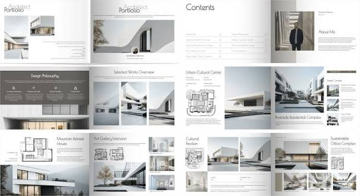
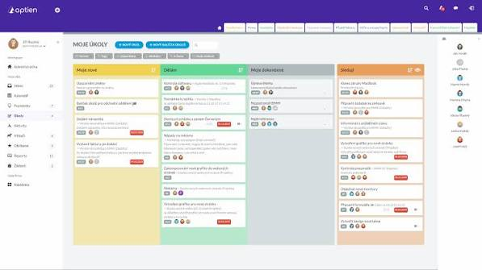
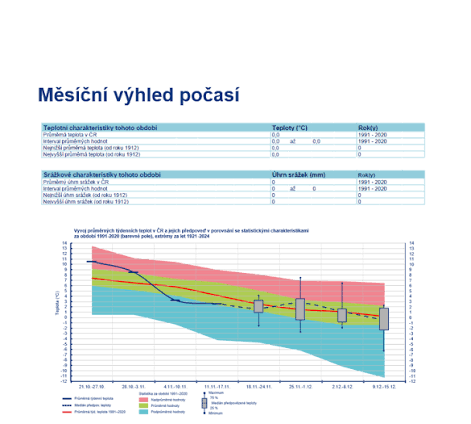

Osobní portfolio
Responzivní webová prezentace vytvořená v sémantickém HTML a čistém CSS s důrazem na přístupnost.

Student C3b
Student C3b, SPŠE Ječná. Obor: IT. Národ: Vietnam.
Responzivní webová prezentace vytvořená v sémantickém HTML a čistém CSS s důrazem na přístupnost.

Jednoduchá webová aplikace pro organizaci studijních povinností a sledování termínů odevzdání.

Přehledná stránka zobrazující předpověď teplot a srážek v různých městech České republiky.

| Dovednost | Úroveň |
|---|---|
| Sémantické HTML5 a přístupnost | Pokročilá |
| CSS3 a responzivní design | Středně pokročilá |
| Git a GitHub | Základní |
E-mail: filip.duy2@gmail.com